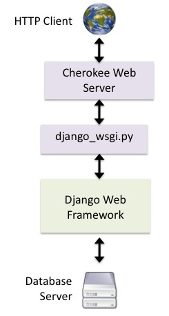
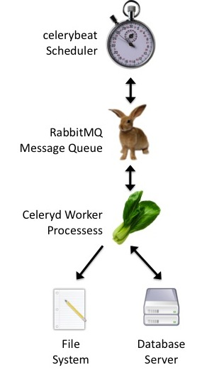

Technology Overview¶
Before you “get started,” make sure to take a look at the Should You Use ChildCount+? section of the introduction. If you are duly convinced that you need some CC+ action in your life, then read on.
Technology Prerequisites¶
Warning
ChildCount+ should NOT be deployed on a publicly accessible network. Data between the server and clients is not encrypted the software is not hardened against attacks.
Tip
Wait! Before you read on, check out the Human Prerequisites section. Make sure that you’re not missing anything on the human side of things before you jump into the land of config files and list comprehensions.
Hopefully these documentation pages, plus some Googling, will be all the information you need to get ChildCount+ up and running. In the real world, it is unlikely that the ChildCount+ team will be able to keep this documentation up to date forever, but at least we are trying!
All Installs¶
- Linux Server
- You will need a server to host your ChildCount+ installation. We recommend using Ubuntu versions 10 and up, since that is what we use for development and deployments.
- Printer
- If you need to print paper reports.
Paper-Form-Based Installs¶
- Computers for Data Entry
- You will need one client machine per data entry clerk. Windows, Max, Linux, OS/2, – anything with a good web browser will do.
- Local Area Network
- To connect your data entry computers to the ChildCount+ server.
SMS-Based Installs¶
- GSM Modem
- If you want to interact with ChildCount+ via SMS. Any modem that works with PyGSM will work. We use Multitech MTCBA-G-F4 modems.
- SMS-Enabled Mobile Phones
- One per community health worker.
- Mobile Phone Chargers
- If you are deploying in an area without reliable power, make sure you have solar chargers or some other means of charging cell phones.
- Airtime Credit Distribution System
- You will need some way to distribute airtime credit to the community health workers. Millennium Villages Project has tried to negotiate with mobile operators to get toll-free SMS lines, but distributing airtime scratch cards by hand is also an option.
Understanding the Components¶
The ChildCount+ stack is large – it includes many components patched together in non-obvious ways. The following diagrams will hopefully give you a sense of what the components of ChildCount+ are and how they relate to each other.
ChildCount+ runs on top of RapidSMS, but since there is almost no documentation for RapidSMS, we will try to document bits of RapidSMS as we go along.
Web. How ChildCount+ handles HTTP requests from Web browsers:
|
 |
SMS. How ChildCount+ handles SMS messages.
|

|
Reports. How ChildCount+ schedules and runs nightly reports and SMS alerts:
|
 |
Configurations¶
There are a few different places where configurations happen in ChildCount+ and it’s useful to know which settings go where.
- settings.py
This is a Python file that holds settings for the Django environment in which RapidSMS and ChildCount+ run. If you have settings for Django plug-ins or need to set environment variables, this is where to do it.
We use it to hold timezone settings, Django cache settings, django-celery settings, and some language settings.
- local.ini
This is a RapidSMS-specific configuration file. It is divided up into sections, with each RapidSMS app getting a single section. RapidSMS passes the values of these settings to the configure() method of the rapidsms.app.App class in the RapidSMS application apps/[app_name]/app.py.
The database login information is here, and the lists of activated ChildCount+ forms and reports are there under the [childcount] header.
- rapidsms.ini
- I am not sure what this does but I am scared to delete it.
- childcount.models.Configuration
- This is a Django model (a database table) that holds some configuration information that doesn’t fit well anywhere else. OpenMRS login information (for mgvmrs) and lists of enabled dashboard sections are there too.